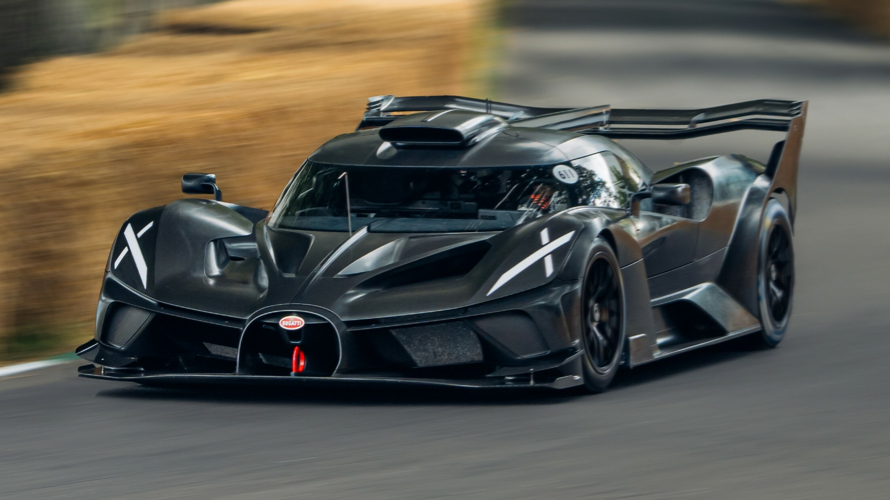
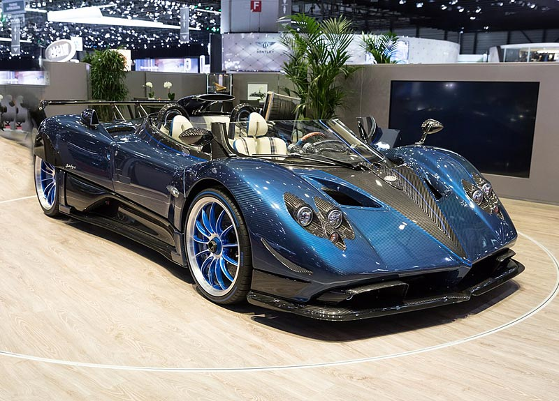
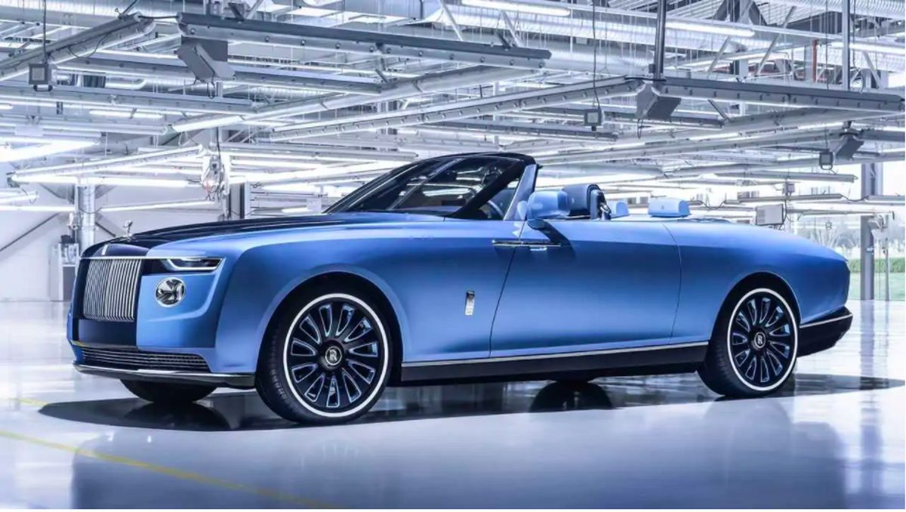

5. Lamborghini Veneno - Rp59.3 Miliar
Harga : Rp59.3 Miliar
 Veneno adalah Hypercar yang sangat langka yang dibuat oleh Lamborghini sebagai perayaan 50 Tahun dari Lamborghini. Dengan harga perkenalan $4.000.000. Veneno adalah mobil legal road termahal yang diproduksi oleh Lamborghini pada saat peluncurannya.
Veneno memiliki dasar seperti Aventador dan menggunakan dapur pacu yang sama. Yakni V-12 6,5 liter dan transmisi manual otomatis kopling tunggal 7-Speed. Seperti ciri khasnya Lambo, mobil ini berpenggerak tenaga ke keempat roda.
Veneno adalah Hypercar yang sangat langka yang dibuat oleh Lamborghini sebagai perayaan 50 Tahun dari Lamborghini. Dengan harga perkenalan $4.000.000. Veneno adalah mobil legal road termahal yang diproduksi oleh Lamborghini pada saat peluncurannya.
Veneno memiliki dasar seperti Aventador dan menggunakan dapur pacu yang sama. Yakni V-12 6,5 liter dan transmisi manual otomatis kopling tunggal 7-Speed. Seperti ciri khasnya Lambo, mobil ini berpenggerak tenaga ke keempat roda.
4. Bugatti Bolide - Rp71.2 Miliar
Harga : Rp71.2 Miliar
 Bugatti merupakan salah satu merek mobil mewah yang paling menyita banyak perhatian. Brand ini sukses menjadi ikon mobil sport bergengsi dan dipilih oleh publik figur seperti Cristiano Ronaldo. Sama seperti supercar lainnya yang diproduksi sangat terbatas untuk menjaga eksklusifitasnya, Bugatti Bolide hanya dijual sebanyak 30 unit. Mobil ini masih dalam tahap pemesanan dan perkiraan harganya mencapai $ 4,8 Juta. atau Rp71.2 Miliar. Nilai spesial dari mobil jutaan dollar yang satu ini, ialah penyematan rangka karbon monocoque yang didesain agar jauh lebih ringan dan lebih aerodinamis daripada Chiron. Dari perubahan ini, Bugatti mengklaim bahwa Bolide hanya seberat 1.451Kg atau 453kg lebih ringan dibanding Bugatti Chiron. Perbedaan berat kendaraan ini yang menjamin bahwa Bolide dapat melesat jauh lebih kencang dibanding Chiron dan tentunya jauh lebih mahal harga jualnya. Kecepatan jet darat ini diklaim mampu menembus 100 Kpj hanya dalam waktu 2,17 detik. Top speed Bolide mampu menembus 500 kpj hanya dalam waktu 20,16 detik.
3. Pagani Zonda HP Barchetta
Harga : Rp261.2 Miliar
 Pagani Zonda HP Barchetta merupakan mobil sangat istimewa dan langka. Hal ini karena pabrikan mobil yang bermarkas di Modena, Italia, hanya memproduksi tiga unit dengan harga saat ini US$17,6 juta atau sekitar Rp 261,2 miliar. Hypercar yang satu ini dibekali mesin Mercedes-AMG M120 V12 berkapasitas 7.3 liter yang mampu menyemburkan daya 789 Tk dan torsi 850 Nm. Dengan mesin tersebut, mobil ini diklaim dapat berakselerasi dari 0-100 km per jam hanya dalam waktu 3,1 detik dan melesat hingga 355 km per jam.
2. Bugatti La Voiture Noire
Harga : Rp277.5 Miliar
 Bugatti La Voiture Noire masuk jajaran dua teratas mobil termahal di dunia karena harganya saat ini mencapai US$18,7 juta atau Rp 277.5 miliar.
Mobil ini dibekali dengan Mesin W16 quad-turbo berkapasitas 8.0-liter, yang bisa menyemburkan tenaga 1.479 hp dan torsi 1.600 Nm. Dengan mesin ini Bugatti La Voiture Noire mampu berakselerasi dari 0-100 km per jam hanya dalam 2,5 detik dan kecepatan maksimum tembus 420 km per jam.
Bugatti La Voiture Noire masuk jajaran dua teratas mobil termahal di dunia karena harganya saat ini mencapai US$18,7 juta atau Rp 277.5 miliar.
Mobil ini dibekali dengan Mesin W16 quad-turbo berkapasitas 8.0-liter, yang bisa menyemburkan tenaga 1.479 hp dan torsi 1.600 Nm. Dengan mesin ini Bugatti La Voiture Noire mampu berakselerasi dari 0-100 km per jam hanya dalam 2,5 detik dan kecepatan maksimum tembus 420 km per jam.
1. Rolls-Royce Boat Tail
Harga : Rp415 Miliar!
 Inilah dia, mobil yang menjawab pertanyaan mobil apa yang paling mahal. Mobil termahal di dunia saat ini, perkenalkan Rolls-Royce Boat Tail dengan harga yang mencengangkan, US$ 28 juta atau sekitar Rp 415 miliar! Alasan mobil ini mahal, tak lain karena selain dibuat bagaikan handcraft, mobil yang hanya dibuat tiga unit ini memiliki barang-barang mewah. Di dalam mobil ini memiliki barang-barang yang diklaim mahal dan mewah, seperti jam tangan analog pada dashboard, portable picnic dan masih banyak lainnya. Disebutkan juga, waktu yang dibutuhkan Rolls-Royce untuk menggarap satu unit Boat-Tail ini memakan waktu hingga empat tahun. Sesuai nama dan fungsinya, Boat-Tail adalah mobil yang juga didesain mirip kapal pesiar. Uniknya, sebelum Rolls-Royce Boat Tail muncul, ada salah satu konsumen yang ingin membeli mobil tersebut, mengajukan permintaan untuk Rolls-Royce membuat mobil yang belum pernah dilihatnya. Tentu saja orang yang memesan Rolls-Royce Boat Tail adalah kaya raya, salah satunya disebut-sebut adalah selebritis Jay-Z dan Beyonce. Disebutkan, Rolls-Royce Boat Tail 2023 menggunakan mesin sama dengan Rolls-Royce Cullinan, dan Rolls-Royce Phantom yaitu menggunakan V12 biturbo dengan kapasitas 6,75 liter yang menghasilkan daya 563 Tk.
beberapa upaya yang dilakuka pemerintah dki jakarta dalam menanggulangi polusi :
- 10. Mercedes-AMG One – Rp37,1 Miliar
- 9. Aston Martin Victor – Rp44,4 Miliar
- 8. Aston Martin Valkyrie – Rp44,4 Miliar
- 7. Lykan Hypersport – Rp50,4 Miliar
- menyiram jalanan dengan menggunakan mobil damkar
- membuat hujan buatan
- memberlakukan kegiatan kerja dan belajar di rumah (wfh)
- menghimbau warga diluar jakarta agar menggunakan kendaraan umum saja
- menyiram jalanan dengan menggunakan mobil damkar
- membuat hujan buatan